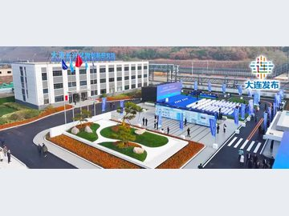

06
提前备战2027年信贷“开门红” 银行争抢“六张网”优质项目
距离2027年不足两个月，银行业一年一度的“开门红”旺季营销已提前拉开帷幕。11月以来，多家银行陆续召开2027年“开门红”启动会，项目储备战线前移…

中国人民银行11月13日发布了10月金融统计数据，一系列数据展现出金融总量合理增长，社会融资条件较为宽松，金融支持实体经济力度持续稳固。
中国人民银行11月11日发布2026年第三季度中国货币政策执行报告。在积极稳妥防范化解金融风险方面，报告提出，构建覆盖全面的宏观审慎管理体系…
中国人民银行11月13日公布的数据显示，M2和社会融资规模增速均保持在合理水平，为经济持续向好向优创造适宜的货币金融环境。
中证报中证网讯（记者 黄一灵）日前，全国中小微企业资金流信用信息共享平台（简称“资金流信息平台”）上线已满两周年。
中国人民银行11月13日下午发布的10月金融统计数据显示，10月末，人民币贷款余额283.33万亿元，同比增长4.7％。
距离2027年不足两个月，银行业一年一度的“开门红”旺季营销已提前拉开帷幕。11月以来，多家银行陆续召开2027年“开门红”启动会，项目储备战线前移…
产业向新而行、向强而进，必须打通技术研发到产业应用的“最后一公里”。组建大连长兴化物创新研究院，是按照省委省政府、市委市政府要求…

会议指出，电网是新型电力系统的核心环节，对保障能源安全、促进绿色转型、支撑现代化产业体系建设具有重要作用。
西柳跨境电商TIR国际公路运输线路首发，满载货品的运输卡车在鞍山跨境电商监管场所顺利通关，启程驶向俄罗斯首都莫斯科…

财联社11月13日讯（编辑 张良） 今日A股走弱，债市先涨后跌，比价效应下政金债和信用债收益率明显上行。
财联社11月12日讯（研究员 李响）站在2026年末向2027年切换的关键节点，一边是国内财政工具加速落地、货币环境维持宽松…